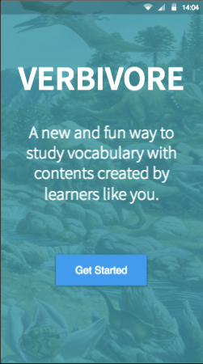
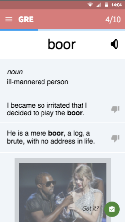
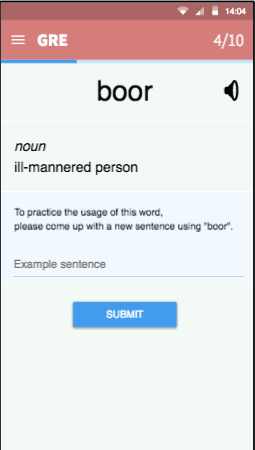
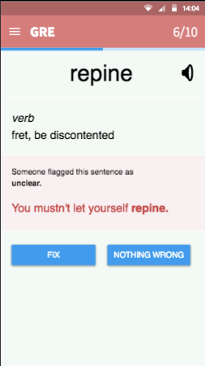
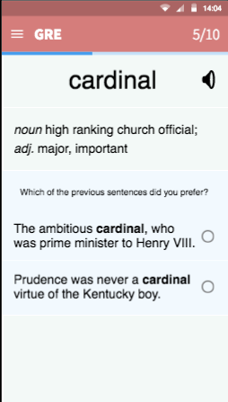
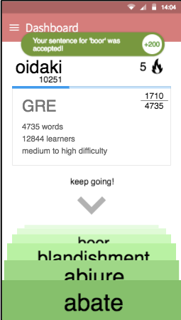

Oisin Daly Kiær, Paul Grau, Yoo Jin Lim
Learnersourcing Vocabulary Flashcards
Given a massive volume of vocabulary words out there, learning vocabulary through standard flashcards yields poor results, due to the individuals’ lapses in motivation and inspiration in the face of tedious work, along with a lack of good guidelines to select what and how to learn.
New user process: Our app is the solution to your studying woes! We want an introductory process that teaches users how to use the system without confusing them with unnecessary details, and we want them to feel that the app will help them. How does the app act when first installed?
Go through a studying session: Complete ten words with associated microtasks. This is to gauge user impressions of the core workflow itself. Experienced user experience.
We chose proto.io on the grounds that we were experienced users of inVision. On a principle of "grass is greener" or “familiarity breeds contempt” we were intrigued by the more comprehensive feature set of proto.io, and the increased interactivity and flexibility that it offers.
The tool is, as mentioned, incredibly feature rich. Our most appreciated features were the reusable components and great stock icons, animations and integrated audio/video player. Relatively to inVision’s system of adding static .png screens and overlaying the interaction layer, proto.io is positively sci-fi. Essentially, proto.io has all the features needed to make a functional app (apart from remote database access and saving state between sessions). It is however, as with most kitchen sink applications, quite slow and non-agile. Especially synchronization with multiple devices created problems. Parallel editing created conflicting versions even when editors were working on different screens. It also seems that changes from one version to another do not propagate all at once. When updating the prototype from the editor, changes would show on one screen and not the other from time to time. This made the iteration cycle more long-winded than it had to be. Additionally, when creating multiple versions of one screen with different contents, the manual repetitive work involved started to become tiring.
All in all, while the stability and performance issues are annoying, the additional features are great to have. As a design tool, proto.io almost dominates inVision for anything above abysmally Low-fi prototypes.
We hard-coded the cards involved in the workflow, and their order and microtask content. Ideally, the ordering and the presence of microtasks are randomized, but that’s not feasible to implement, nor is the process something we have formulated yet. We wanted to test users’ reactions to our oft-discussed ‘integrated workflow’, so we had to give them a decent example of what a session with our app looks like. It is very much a vertical prototype, with the intended community and gamification elements only very superficially touched on.
The dashboard has vestiges of gamification on it, with a score and streak counter. They aren’t exactly functional, and the score is not increased as the user works anyway, so the addictive aspects of gamification are not really ‘sold’ by the prototype as it works now. Regardless, designing it at this level helped our process, so it was worthwhile.
Microtasks related to tagging, submitting sound clips, submitting pictures, were left unimplemented on grounds of complexity. We have stuck with sentence-related microtasks, but we clearly also need to test the other types, to see if they can fit in our workflow in an engaging and non-tedious way.


Prototype Link: https://pr.to/NQU184/
Instructions: Start by clicking on "Get Started" button. Then, choose the GRE deck of flashcards and start the studying session!
User #1 M
I like the colors and the Material UI design.
On the card deck selection screen, one button to expand all descriptions at once would be nice, so I don’t have to open up everything.
On the card deck selection screen, it would be good if the data (numbers, difficulty) were represented more graphically.
On the session overview screen, maybe a "select all" button would be useful in case I know most of the words.
On each flashcard, there should be more distinction between the features.
I would like to learn the word’s pronunciation, either by IPA or audio.
In the word definition, the "part of speech" information could be encoded with icons or different colors.
If there are example sentences for different definitions, that should be made visible, e.g. with different colors or filtered based on the corresponding definition.
I should be clearly instructed beforehand that I will be running into different tasks during my study session.
I want to be able to fix or mark a bad definition (e.g. one that uses too complicated words).
Currently, there is only one button to finish reading a card, "I got it". What if I didn’t get it, even after reading the card? I would want the app to remember that and show me the card again later.
In the voting microtask, the question should have a more personal touch, such as starting the question with "In your opinion, ...". What if I think that both sentences are good?
When flagging a sentence, sometimes I would like to provide a fix or express my opinion other than the options provided, e.g. on a Likert scale.
On the Dashboard, the numbers and icons don’t make sense without prior explanation.
Currently, a microtask is always associated with the word I learned just before. But people might get used to that and lose motivation. Maybe the tasks could be for a random word I learned some time before.
Apart from the voting task, some people might find it hard to come up with responses for the tasks. Maybe I could be able to skip some (while not getting points)?
User #2 S
I get the name of the app, but it is so bad. First I saw "Herbivore". Prehistoric background, I thought this is about dinosaurs.
I don’t want to sign in!
On the vocabulary list, "cardinal" I think I know, but I’m not sure.
How about adding some pronunciation? I need it.
On the flag-fix microtask: It’s not unfixable, I just don’t know how to fix it.
On the voting microtask: If there are two explanations for two different meanings, how can I choose the better one?
On card 8 of 10: I am getting annoyed. I don’t want to choose anything. I don’t know.
I don’t understand the numbers and icons on the Dashboard.
I don’t have the perseverance and time to use such an app every day. 10 words is too much for me, maybe 1 or 2 a day?
I did not like the microtasks in general. Creating might teach well. Fixing is too abstract. Voting is hard because I don’t know which one is good. I want a perfect sentence to learn, don’t want to rate which one is better.
User #3 T
It seems too much that I saw a word for the first time and I am asked to fix a sentence.
I don’t like the task of having to make a sentence for the given word.
If I write a very simple sentence with the word in the task, it will not help with my learning.
I expected a "Got It" button but I don’t see one on the microtask page.
I don’t understand what the score is for. Is it based on a competition or is it for a reward?
I think the picture in the flashcard is useful.
I don’t understand some of the words in the example sentences
I want to be able to skip a task I don’t want to do.
If I knew that other people will see the sentence, I might make more effort.
I listen to the pronunciation sound first when I see the flashcard.
I wonder if I can tap on words I don’t know in the definition and examples sentences, for more information.
I need to see more example sentences.
I want to feel sure about the quality of example sentences, maybe show the source of the sentences.